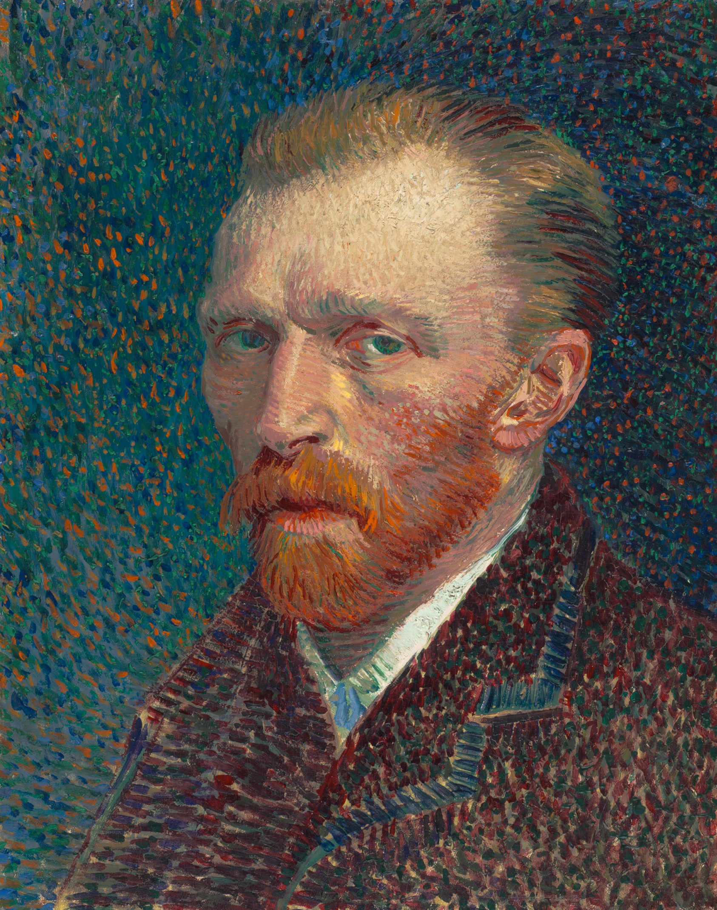
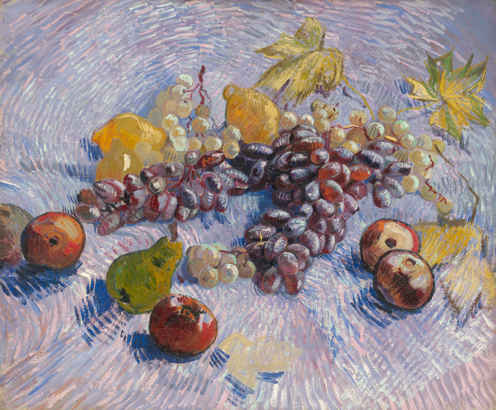
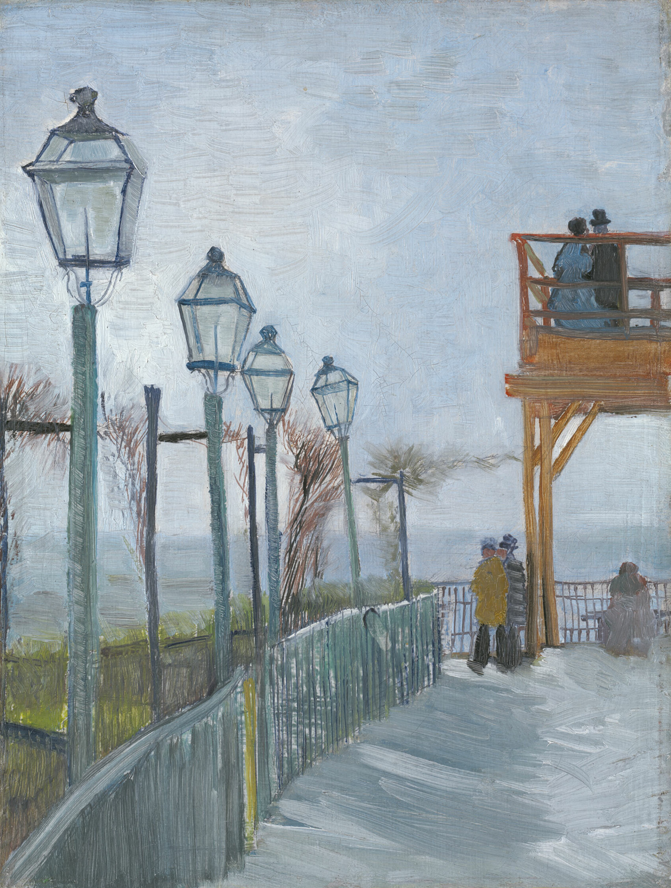
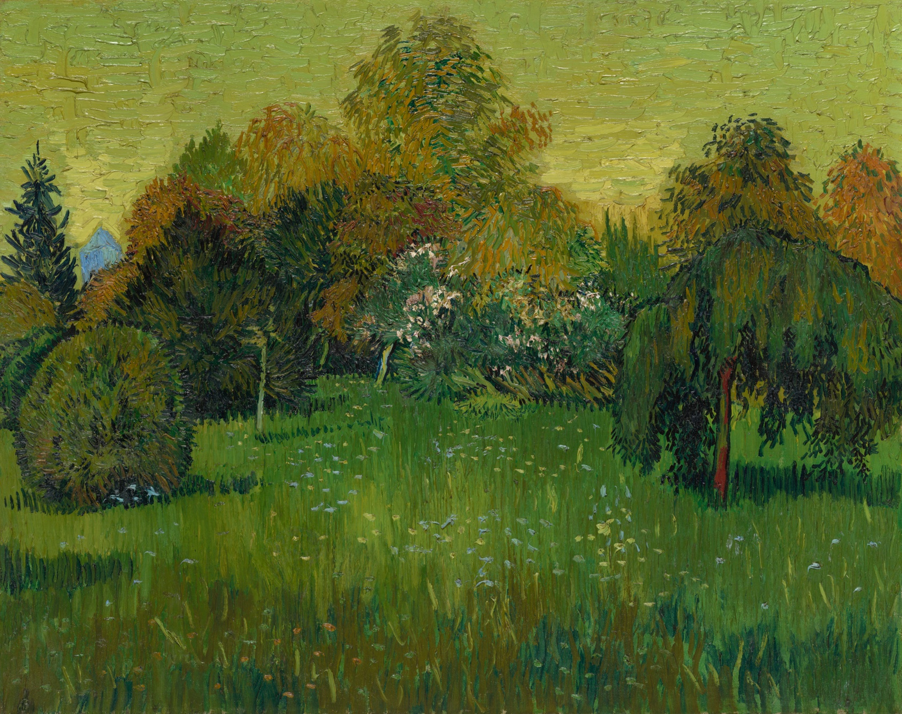
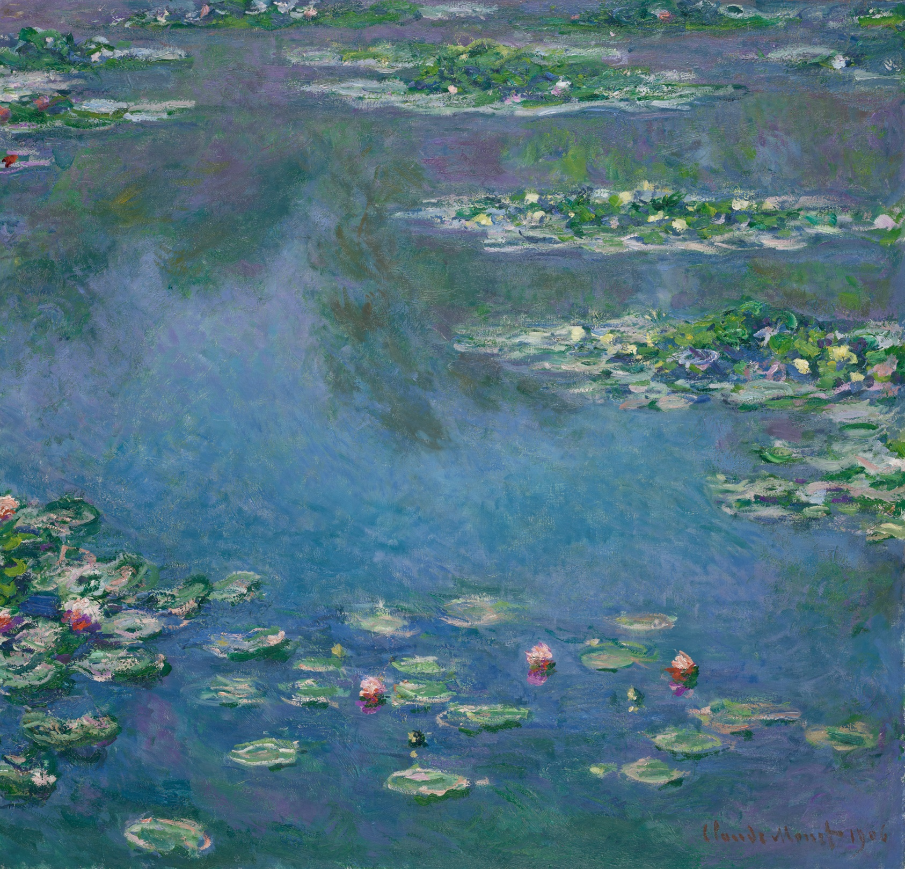
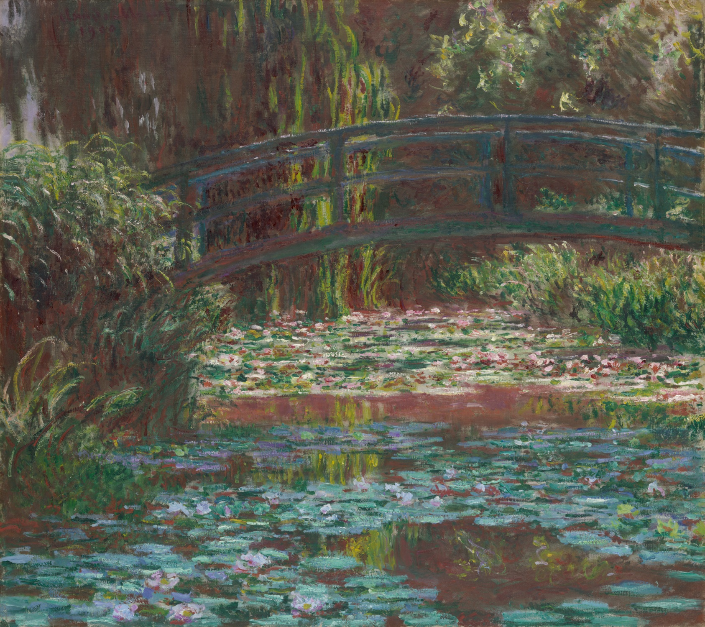
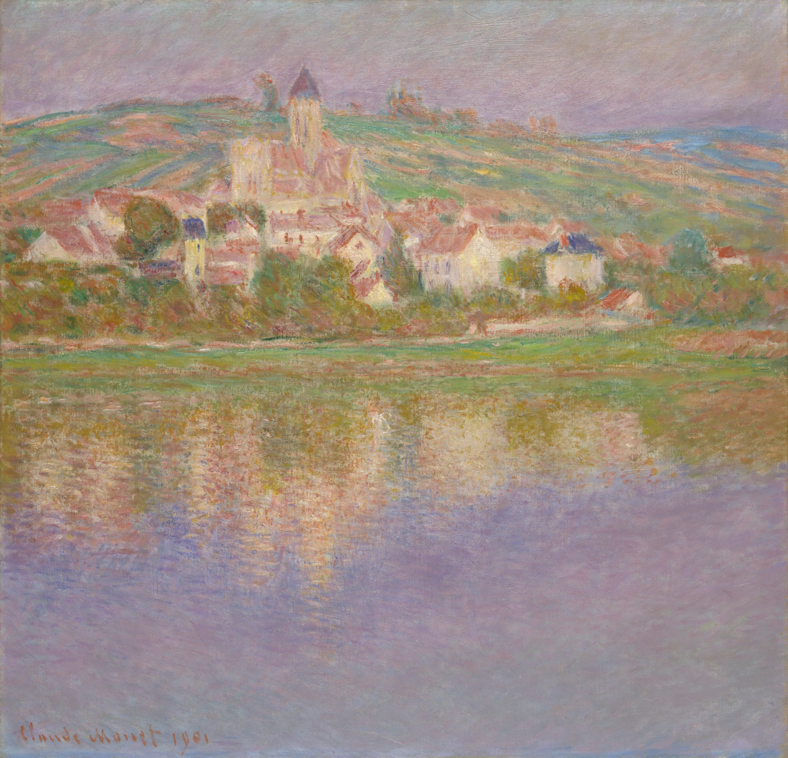
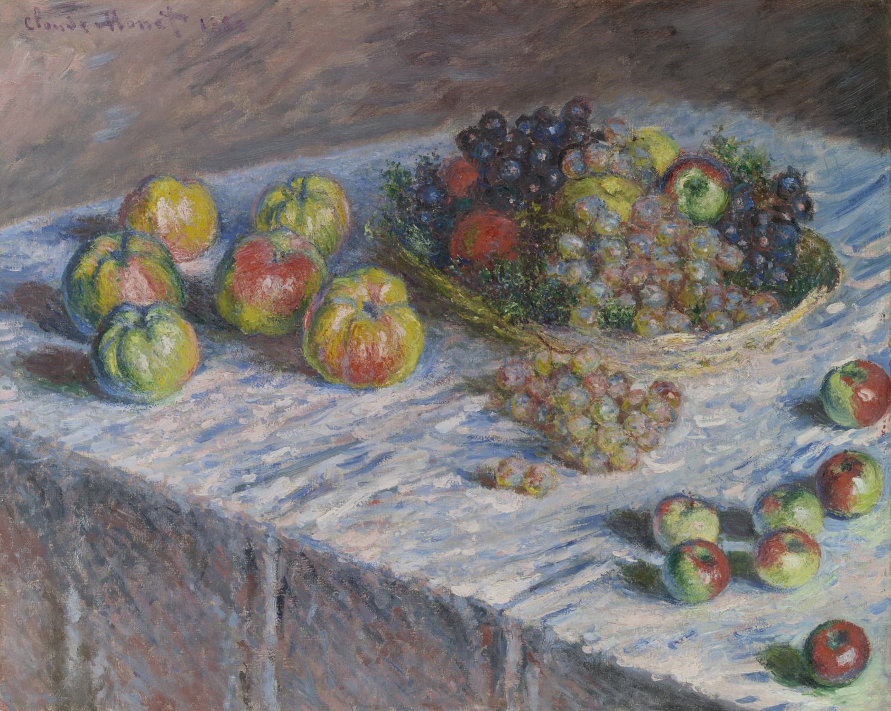

Art API
Art from
The Art Institute of Chicago
Vincent Van Gogh

Self-Portrait

Grapes, Lemons, Pears, and Apples

Terrace and Observation Deck at the Moulin de Blute-Fin Montmartre

The Poet's Garden
Claude Monet

Water Lilies

Water Lily Pond

Véthuil

Apples and Grapes